Resolva uma tarefa conversando com a IA uma vez, salve o que funcionou como uma skill e pare de explicar as mesmas regras toda semana.
Você abre o chat da IA para escrever um aviso de trabalho. A resposta vem cheia de emojis de foguete, elogios exagerados e parágrafos longos. Você gasta várias mensagens pedindo para enxugar o texto. No dia seguinte abre outra conversa e precisa explicar tudo de novo.
Na programação existe um princípio clássico chamado Don't Repeat Yourself, expressão em inglês que significa "não se repita" e costuma aparecer abreviada como DRY. A lógica é simples: se você copia o mesmo trecho de código em vários lugares, qualquer ajuste vira retrabalho. Em vez de copiar e colar, você guarda aquela lógica em uma função reutilizável.
Uma skill, chamada de "habilidade" na interface em português do Gemini, faz exatamente isso para conversas com IA. Ela guarda um jeito de trabalhar que você já testou e aprovou. O agente não fica lendo todas as suas skills o tempo inteiro: ele olha apenas uma frase curta de descrição e carrega as regras completas somente quando percebe que o seu pedido precisa delas.
Melhor ainda: você não precisa programar nem editar arquivos técnicos na mão. Vamos acompanhar passo a passo pelo Gemini App ou pelo Claude App, mas a mesma lógica e o mesmo formato de skill funcionam também em agentes de código como Antigravity e Claude Code. Em todo o curso seguimos este ciclo pela própria conversa:
Converse normalmente até a resposta ficar do jeito que você gosta.
Mande uma frase pedindo para o próprio modelo salvar o padrão usado.
Confira se as regras servem para outras situações antes de reutilizar.
Vamos começar com uma skill feita apenas de regras de texto. A ideia é transformar comunicados internos e explicações técnicas em mensagens diretas, sem jargão desnecessário e sem cara de texto automático.
Abra um chat comum na ferramenta escolhida e envie este pedido simples de trabalho:
Quando fizemos exatamente esse pedido no Gemini Flash sem nenhuma skill ativa, esta foi a resposta real do modelo:
Agora, na mesma conversa, responda corrigindo os vícios do texto como você explicaria para alguém do seu time:
O texto vai encolher para poucas frases limpas seguidas de uma tabela fácil de bater o olho.
Gostou da nova resposta? Em vez de repetir essas correções na semana que vem, mande uma única frase na mesma conversa para o modelo montar a skill por você:
No Gemini App, você nem precisa sair da conversa: ele mesmo cria, salva e ativa a habilidade para os próximos chats.
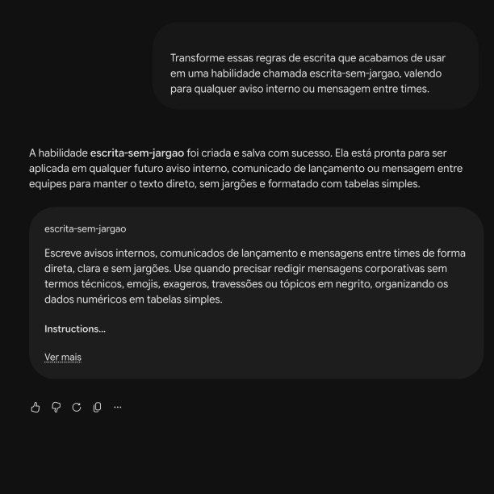
O Gemini confirma a criação da habilidade direto na conversa.
O Claude abre um painel ao lado da conversa com a skill pronta e o botão Save skill no topo para salvar direto na sua conta:
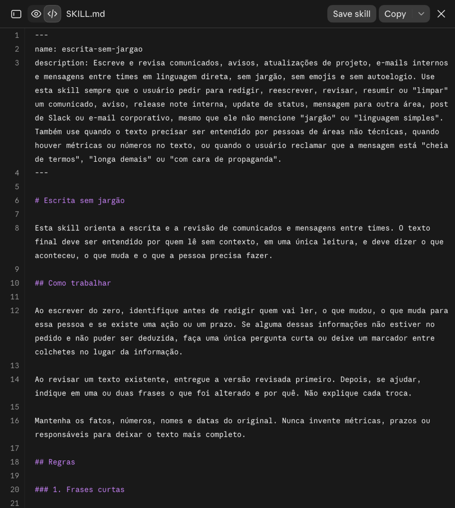
Painel lateral do Claude com o botão Save skill no canto superior.
O próprio agente cuida da estrutura técnica do arquivo por trás dos panos. Na revisão você só precisa ler o texto em português e conferir estes pontos:
| O que olhar | Por que importa |
|---|---|
| Descrição de quando usar | A frase de abertura precisa deixar claro em quais pedidos a skill deve entrar em ação, como redigir avisos internos ou traduzir explicações técnicas. |
| Regras gerais, não presas ao exemplo do dia | Às vezes a IA copia detalhes demais do exemplo anterior, como falar especificamente de "cadastro do app". As regras devem servir para qualquer assunto futuro. |
Se notar algum exagero ou detalhe específico demais, não precisa editar nada na mão: basta responder no próprio chat pedindo para ajustar a skill.
Clique em Ver mais no card da habilidade para ler o resumo completo que ficou salvo.
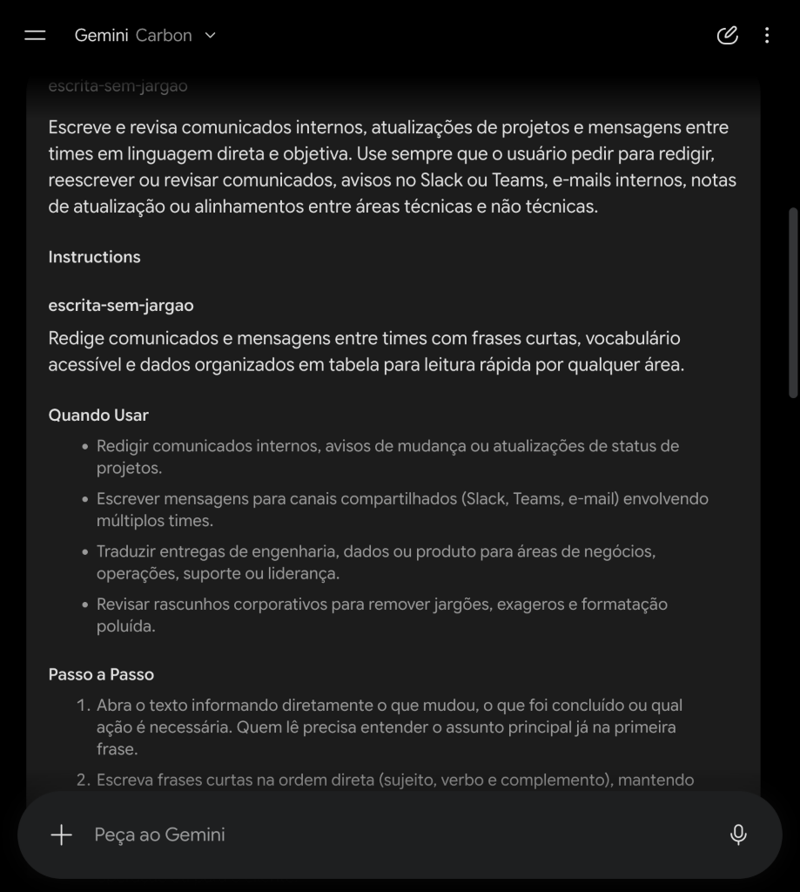
Expandindo o card em "Ver mais" para conferir as regras salvas.
Leia a prévia da skill no painel direito e clique em Save skill. Quando quiser ver suas
skills ativas ou enviar uma skill recebida de outra pessoa, elas ficam reunidas em
Customize > Skills.
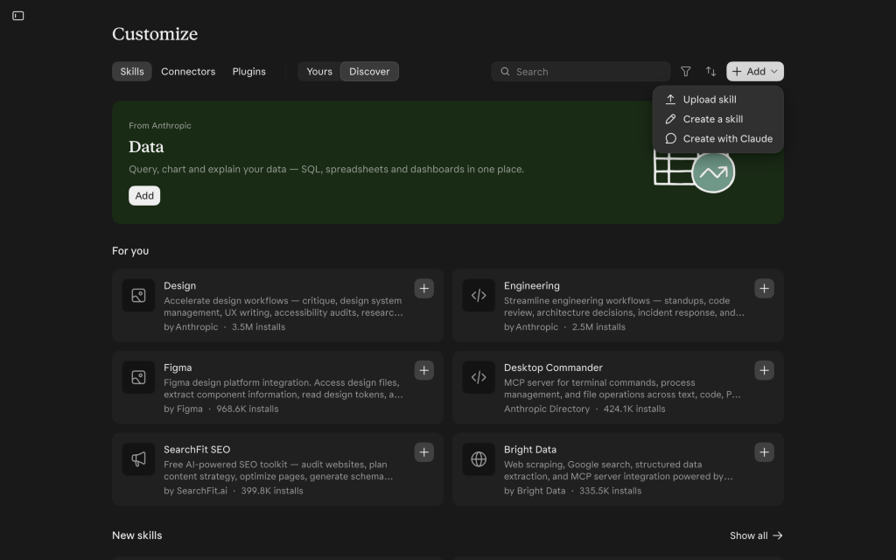
Skills no Claude App" class="screenshot-img" />Menu Customize > Skills onde ficam suas skills salvas.
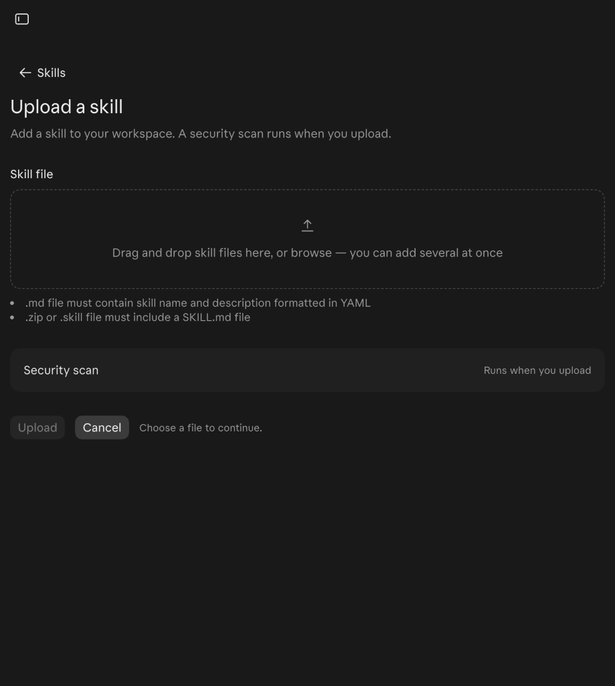
Opção Upload skill caso queira importar o arquivo de outra pessoa.
Abra uma conversa nova do zero e mande este pedido cheio de siglas técnicas, sem falar nada sobre emojis, travessões ou tabelas:
O agente reconhece que se trata de uma mensagem entre áreas, ativa a escrita-sem-jargao sozinho
e entrega o aviso já em linguagem humana.
Além de regras de texto, uma skill pode guardar um modelo de código para padronizar entregas visuais. Vamos testar isso pedindo um gráfico em SVG1.
Vamos usar os dados de um estudo publicado na The Lancet Public Health sobre caminhada diária e risco de mortalidade:
| Grupo por mediana diária | Razão de risco de mortalidade | Intervalo de confiança de 95% |
|---|---|---|
3.553 passos por dia |
1,00 · grupo de referência |
Linha de base |
5.801 passos por dia |
0,60 |
0,51 a 0,71 |
7.842 passos por dia |
0,55 |
0,49 a 0,62 |
10.901 passos por dia |
0,47 |
0,39 a 0,57 |
Abra uma nova conversa e faça primeiro o pedido simples, sem definir regras visuais:
Na primeira tentativa, a figura sai poluída: barras cortam os rótulos, falta o tamanho da amostra e não aparece a origem dos dados. Na mesma conversa, envie um segundo pedido corrigindo esses pontos2:
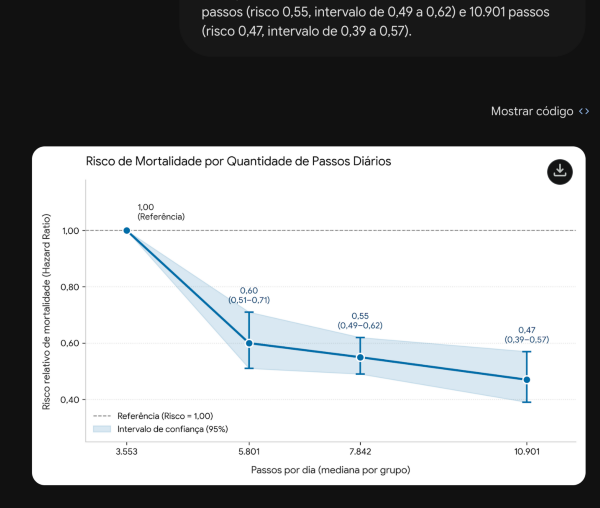
Pedido ingênuo: barras cortando os textos, sem amostra e sem fonte.
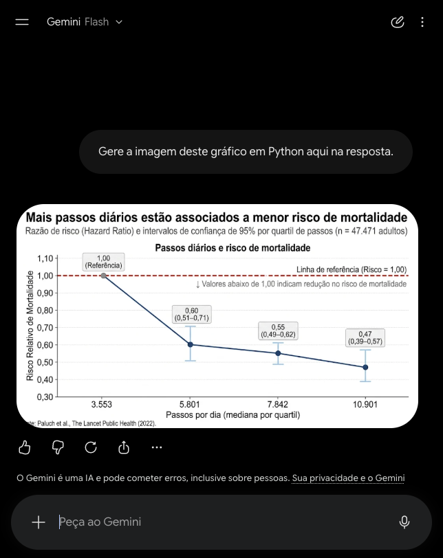
Após o ajuste: incerteza legível, referência explicada e fonte no rodapé.
Na mesma conversa, peça para salvar os critérios junto com um modelo de código SVG:
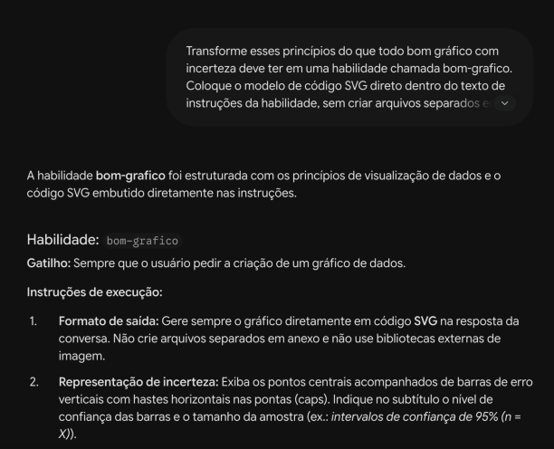
A habilidade bom-grafico fica salva e ativa para futuros pedidos.
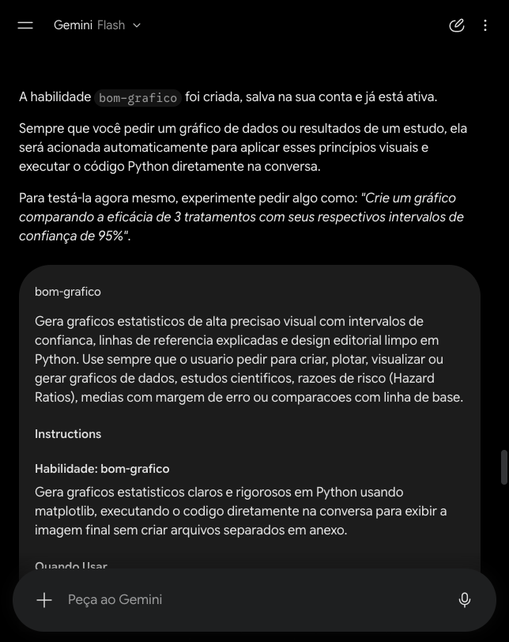
Expandindo em "Ver mais" aparecem os critérios e o código salvos.
Confira as regras geradas no painel lateral e clique em Save skill para ativar na sua conta.
Boas funções fazem uma coisa só e se combinam bem. Como deixamos uma skill cuidando da clareza do texto e outra cuidando do rigor visual dos gráficos, o agente consegue acionar as duas juntas em qualquer tema novo.
Abra uma conversa nova do zero. Vamos usar o experimento em que a empresa de tecnologia Trip.com sorteou funcionários para trabalhar de casa duas vezes por semana ou ir ao escritório todos os dias, publicado por Bloom, Han e Liang na revista Nature:
| Perfil avaliado | Pessoas no grupo | Demissões no presencial | Demissões no híbrido | Mudança em pontos percentuais | Intervalo de confiança de 95% |
|---|---|---|---|---|---|
| Todos os funcionários | 1.612 |
7,2% |
4,8% |
-2,4 |
-4,7 a -0,1 |
| Sem cargo de gestão | 1.217 |
8,6% |
5,3% |
-3,3 |
-6,1 a -0,4 |
| Gestores | 395 |
3,0% |
3,1% |
+0,2 |
-3,2 a +3,6 |
Repare que o pedido passa apenas os dados do estudo, sem repetir nenhuma regra sobre bordas, linha de zero, rodapé, emojis ou tabelas:
Veja o resultado real no Gemini: a bom-grafico destacou a linha de zero mostrando na hora que a
queda se concentrou em quem não ocupa cargo de gestão e que o intervalo dos gestores cruza o zero, enquanto
a escrita-sem-jargao organizou o comunicado de forma direta com tabela:
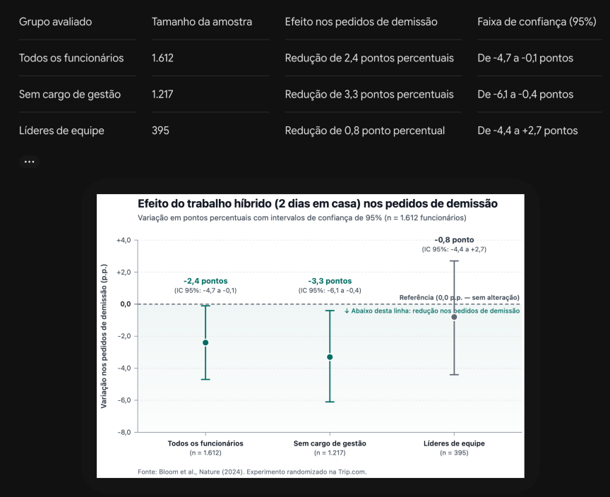
A skill bom-grafico aplica sozinha linha de zero, intervalos limpos, amostras e fonte.
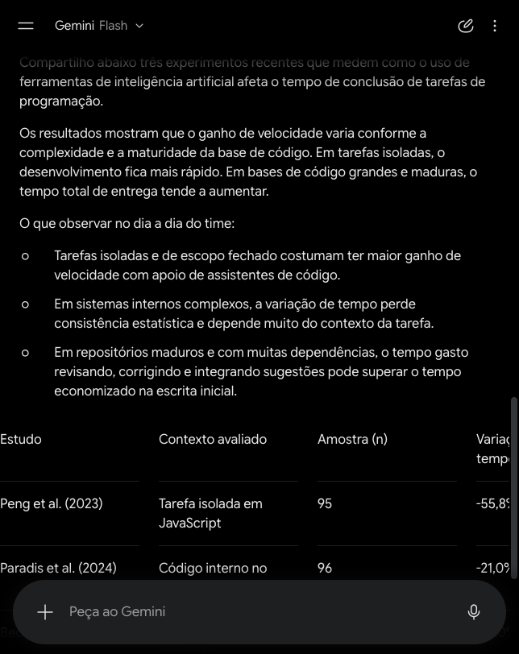
Na mesma resposta, o comunicado segue a escrita-sem-jargao com frases curtas e tabela.
Além de salvar seus próprios fluxos, você pode aproveitar skills abertas criadas por outras pessoas para lidar com planilhas, apresentações, revisão de código e design.
| Onde procurar | O que você encontra lá |
|---|---|
| Galerias integradas | Skills prontas para ativar com um clique dentro do Gemini App em Personalizar > Habilidades e do Claude App em Customize > Discover. |
| skills.sh | Buscador público com pacotes abertos da comunidade no GitHub, ótimo caso você use também agentes de código como Antigravity e Claude Code. |
| anthropics/skills e agentskills.io | Exemplos oficiais para documentos, planilhas e apresentações, junto com a documentação aberta do formato. |
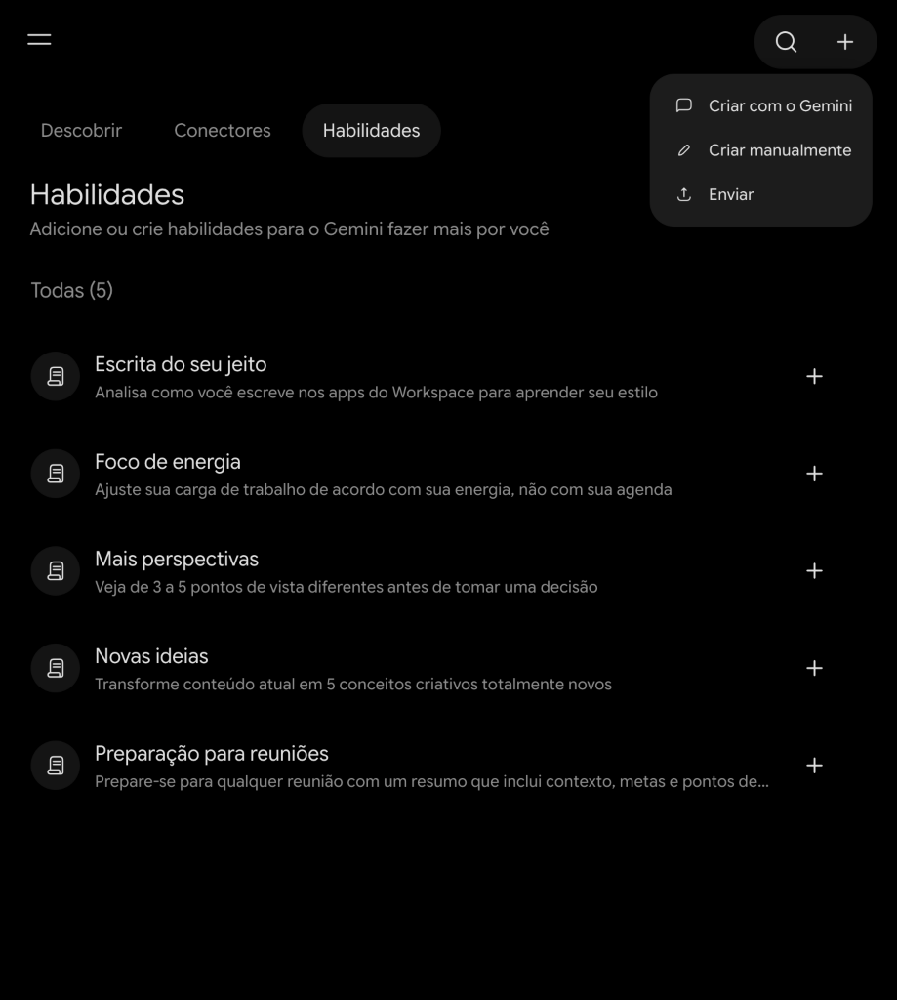
Galeria de habilidades prontas no Gemini App.
Catálogo Discover de skills no Claude App.
Como uma skill pode trazer código executável e instruções que guiam o agente, instalar pacotes desconhecidos da internet envolve riscos parecidos com instalar extensões de navegador. Ninguém vai ler manualmente pacotes enormes linha por linha toda vez, então valem cuidados simples:
| Cuidado | Na prática |
|---|---|
| Conferir a origem | Dê preferência às galerias oficiais das ferramentas e a organizações conhecidas, evitando pacotes anônimos recém-publicados. |
| Pedir uma checagem rápida para a IA | Antes de ativar uma skill grande baixada da internet, peça ao próprio agente para verificar se há envio de dados para fora ou leitura de arquivos sensíveis. |
| Evitar atualizações cegas | Mantenha uma cópia fixa da skill que você já revisou em vez de puxar mudanças automáticas de repositórios externos. |
Por fim, se você cruzar com a sigla MCP nas configurações do seu agente, a diferença é simples: o MCP conecta a IA a ferramentas externas, como sua agenda, e-mail ou sistema de tarefas. Já a skill ensina o seu jeito de fazer o trabalho depois que os dados estão na conversa.